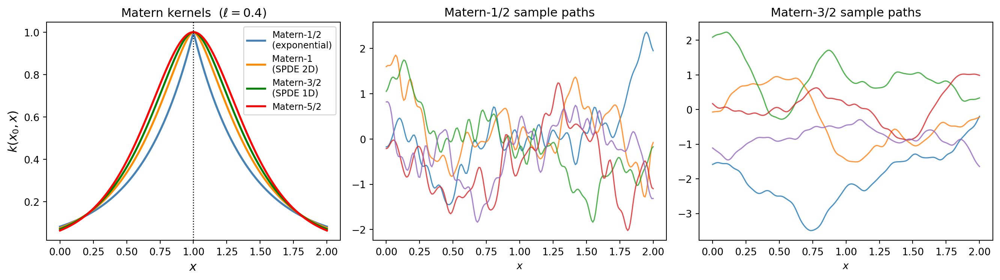
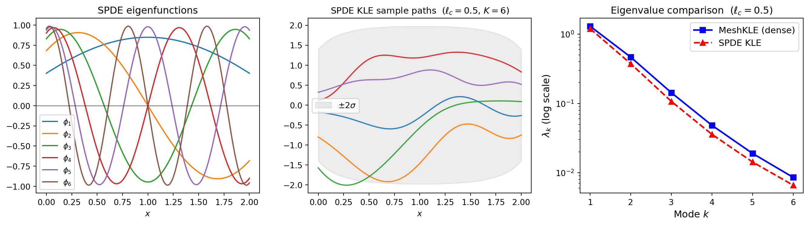
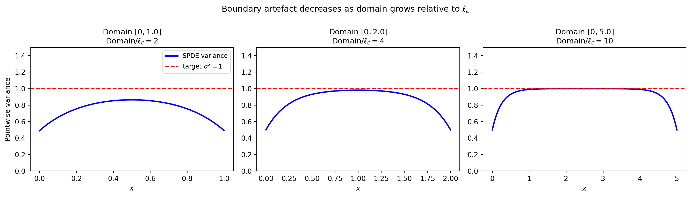
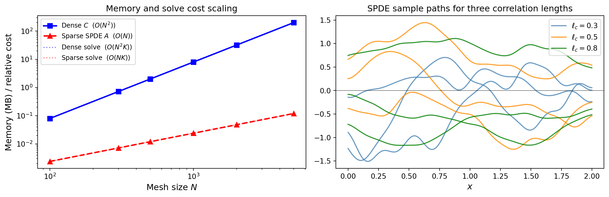
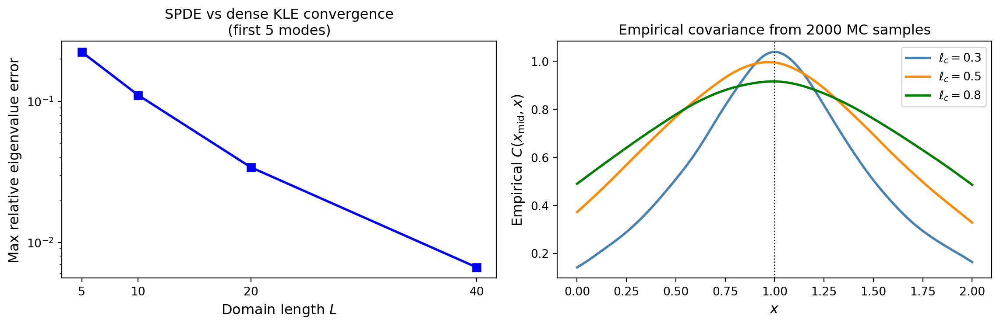
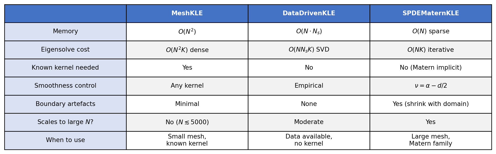

import numpy as np
np.random.seed(42)
import matplotlib.pyplot as plt
from scipy.special import gamma as gamma_fn
from pyapprox.util.backends.numpy import NumpyBkd
from pyapprox.surrogates.kernels import Matern32Kernel, ExponentialKernel
from pyapprox.surrogates.kle import MeshKLE
from pyapprox.pde.galerkin.mesh.structured import StructuredMesh1D
from pyapprox.pde.galerkin.basis.lagrange import LagrangeBasis
from pyapprox.pde.field_maps.kle_factory import (
create_spde_matern_kle,
create_fem_nystrom_nodes_kle,
)
bkd = NumpyBkd()
rng = np.random.default_rng(7)KLE III: SPDE-Based KLE for Matern Fields
PyApprox Tutorial Library
Use SPDEMaternKLE for scalable KLE of Matern random fields via sparse PDE operators.
TipDownload Notebook
Learning Objectives
After completing this tutorial, you will be able to:
- Explain the SPDE connection between Matern covariance kernels and differential operators
- Use
create_spde_matern_kleto build a sparse SPDE-based KLE - Compare SPDE eigenvalues against the dense kernel-based
MeshKLE - Understand boundary artefacts and how they diminish as the domain grows
- Choose between
MeshKLE,DataDrivenKLE, andSPDEMaternKLEfor a given problem
In KLE I we introduced the KLE and in KLE II we compared kernel-based and data-driven approaches. Both rely on dense \(O(N^2)\) matrices. The SPDE approach replaces the dense covariance with a sparse PDE operator whose Green’s function is the Matern covariance, giving \(O(N)\) memory.
The Matern-SPDE connection
A Matern random field with smoothness \(\nu\) and correlation length \(\ell_c\) is the solution to the SPDE:
\[(\kappa^2 - \Delta)^{\alpha/2} u = \mathcal{W}\]
with \(\alpha = \nu + d/2\) (integer \(\alpha\) avoids fractional operators). For the bilaplacian prior \(\alpha = 2\):
| Dimension \(d\) | Smoothness \(\nu = 2 - d/2\) | Kernel |
|---|---|---|
| 1D | \(\nu = 3/2\) | Matern-3/2 |
| 2D | \(\nu = 1\) | Between Matern-1/2 and 3/2 |
| 3D | \(\nu = 1/2\) | Exponential (Matern-1/2) |
The SPDE parameters map to physical parameters as: \[\gamma \leftrightarrow \text{diffusion}, \quad \delta = \kappa^2 \gamma, \quad \ell_c = \sqrt{\gamma/\delta} = 1/\kappa\]
from scipy.special import kv
from _figures._kle import plot_matern_kernels_paths
x_plot = np.linspace(0, 2, 200)
mesh_plot = bkd.array(x_plot[None, :])
x0 = 1.0
ell = 0.4
# Compute Matern kernel curves
r = np.abs(x_plot - x0)
kernel_curves = []
for nu, name, color in [(0.5, "Matern-1/2\n(exponential)", "steelblue"),
(1.0, "Matern-1 \n(SPDE 2D)", "darkorange"),
(1.5, "Matern-3/2\n(SPDE 1D)", "green"),
(2.5, "Matern-5/2", "red")]:
sqrt2nu = np.sqrt(2*nu)
z = sqrt2nu * np.maximum(r, 1e-14) / ell
k = (2**(1-nu) / gamma_fn(nu)) * z**nu * kv(nu, z)
k[r < 1e-12] = 1.0
kernel_curves.append((r, k, name, color))
# Compute sample paths for two smoothness values
dx_plot = x_plot[1] - x_plot[0]
w_plot = np.ones(200) * dx_plot; w_plot[0] /= 2; w_plot[-1] /= 2
quad_plot = bkd.array(w_plot)
sample_paths_list = []
path_labels = []
for nu, name, kernel_class in [
(0.5, "Matern-1/2", ExponentialKernel),
(1.5, "Matern-3/2", Matern32Kernel),
]:
kern = kernel_class(bkd.array([ell]), (0.01, 10.0), 1, bkd)
kle_plot = MeshKLE(
mesh_plot, kern, sigma=1.0, nterms=50,
quad_weights=quad_plot, bkd=bkd,
)
coef = bkd.array(rng.standard_normal((50, 5)))
sample_paths_list.append(bkd.to_numpy(kle_plot(coef)))
path_labels.append(name)
fig, axes = plt.subplots(1, 3, figsize=(14, 4))
plot_matern_kernels_paths(x_plot, kernel_curves, sample_paths_list, path_labels, axes)
plt.tight_layout()
plt.show()
Smaller \(\nu\) produces rougher (less differentiable) paths. The SPDE approach lets us work with any \(\nu\) through the integer \(\alpha\) parametrization.
Building the SPDE KLE with create_spde_matern_kle
The create_spde_matern_kle factory assembles the sparse FEM precision operator \(A = \gamma K_{\text{stiff}} + \delta M + \xi M_{\partial}\) and solves the generalized eigenvalue problem \(A\phi_k = \mu_k M \phi_k\). The KLE eigenvalues are \(\lambda_k = \gamma^2/(\tau^2 \mu_k^2)\).
This uses only sparse matrices, giving \(O(N)\) memory instead of \(O(N^2)\).
from _figures._kle import plot_spde_overview
# Parameters for ell_c = 0.5 in 1D
ell_c = 0.5
gamma = 1.0
delta = gamma / ell_c**2
nterms = 6
nx = 300
# Build FEM mesh and basis
mesh = StructuredMesh1D(nx=nx, bounds=(0.0, 2.0), bkd=bkd)
basis = LagrangeBasis(mesh, degree=1)
# Create SPDE KLE
kle_spde = create_spde_matern_kle(
basis, n_modes=nterms, gamma=gamma, delta=delta,
sigma=1.0, bkd=bkd,
)
lam_spde = bkd.to_numpy(kle_spde.eigenvalues())
phi_spde = bkd.to_numpy(kle_spde.eigenvectors())
x_nodes = bkd.to_numpy(basis.dof_coordinates())[0]
# Compare with dense Matern-3/2 MeshKLE
nu = 1.5
kappa = np.sqrt(delta / gamma)
rho = np.sqrt(2 * nu) / kappa
lenscale = bkd.array([rho])
matern_kernel = Matern32Kernel(lenscale, (0.01, 100.0), 1, bkd)
skfem_basis = basis.skfem_basis()
kle_nystrom = create_fem_nystrom_nodes_kle(
skfem_basis, matern_kernel, nterms=nterms, sigma=1.0, bkd=bkd,
)
lam_dense = bkd.to_numpy(kle_nystrom.eigenvalues())
nsamples_show = 5
Z_s = bkd.array(rng.standard_normal((nterms, nsamples_show)))
fields_spde = bkd.to_numpy(kle_spde(Z_s))
var_spde = bkd.to_numpy(kle_spde.pointwise_variance())
k_idx = np.arange(1, nterms + 1)
fig, axes = plt.subplots(1, 3, figsize=(14, 4))
plot_spde_overview(
x_nodes, phi_spde, nterms, fields_spde, var_spde,
k_idx, lam_dense, lam_spde, ell_c,
axes[0], axes[1], axes[2],
)
plt.tight_layout()
plt.show()
pointwise_variance(). Right: eigenvalue comparison between the sparse SPDE KLE and the dense MeshKLE with Matern-3/2 kernel. They agree at low modes but differ near the boundary.
The SPDE and dense eigenvalues agree at low modes. They differ near the boundary – an intrinsic feature of the SPDE approach.
Boundary effects: the key SPDE limitation
The Matern covariance on \(\mathbb{R}^d\) is stationary (translation invariant). On a bounded domain the SPDE uses Robin boundary conditions that modify the covariance near the edges. This boundary artefact decreases as the domain grows relative to \(\ell_c\).
from _figures._kle import plot_boundary_artefacts
ell_c_fixed = 0.5
domain_data = []
for domain_len in [1.0, 2.0, 5.0]:
nx_d = max(100, int(domain_len / 0.01))
mesh_d = StructuredMesh1D(nx=nx_d, bounds=(0.0, domain_len), bkd=bkd)
basis_d = LagrangeBasis(mesh_d, degree=1)
gamma_d = 1.0
delta_d = gamma_d / ell_c_fixed**2
nterms_d = min(40, nx_d - 2)
kle_d = create_spde_matern_kle(
basis_d, n_modes=nterms_d, gamma=gamma_d, delta=delta_d,
sigma=1.0, bkd=bkd,
)
x_d = bkd.to_numpy(basis_d.dof_coordinates())[0]
var_d = bkd.to_numpy(kle_d.pointwise_variance())
domain_data.append((x_d, var_d, domain_len))
fig, axes = plt.subplots(1, 3, figsize=(14, 4))
plot_boundary_artefacts(domain_data, ell_c_fixed, axes)
fig.suptitle("Boundary artefact decreases as domain grows relative to $\\ell_c$",
fontsize=12)
plt.tight_layout()
plt.show()
Rule of thumb: for reliable interior statistics extend the domain by \(\gtrsim 3\ell_c\) on each side, then discard the boundary buffer.
Memory and computational scaling
The eigenvalue solve cost also differs significantly:
MeshKLE: Dense eigendecomposition costs \(O(N^2 K)\) (or \(O(N^3)\) for all modes)DataDrivenKLE: SVD of the \(N \times N_s\) sample matrix costs \(O(N \cdot N_s \cdot K)\)SPDEMaternKLE: Sparse generalized eigenvalue solve costs \(O(N \cdot K)\) with iterative methods (e.g. ARPACK)
from _figures._kle import plot_memory_scaling
# Scaling data
N_vals = np.array([100, 300, 500, 1000, 2000, 5000])
K_modes = 20
mem_dense = N_vals**2 * 8 / 1e6
mem_sparse = N_vals * 3 * 8 / 1e6
cost_dense = N_vals**2 * K_modes
cost_sparse = N_vals * K_modes
# Sample paths with different correlation lengths
ells = [0.3, 0.5, 0.8]
nx_s = 200
mesh_s = StructuredMesh1D(nx=nx_s, bounds=(0.0, 2.0), bkd=bkd)
basis_s = LagrangeBasis(mesh_s, degree=1)
x_s = bkd.to_numpy(basis_s.dof_coordinates())[0]
fields_by_ell = []
for ell_target in ells:
gamma_t = 1.0
delta_t = gamma_t / ell_target**2
kle_t = create_spde_matern_kle(
basis_s, n_modes=20, gamma=gamma_t, delta=delta_t,
sigma=1.0, bkd=bkd,
)
Z_t = bkd.array(rng.standard_normal((20, 3)))
fields_by_ell.append(bkd.to_numpy(kle_t(Z_t)))
fig, axes = plt.subplots(1, 2, figsize=(12, 4))
plot_memory_scaling(
N_vals, mem_dense, mem_sparse, cost_dense, cost_sparse,
x_s, fields_by_ell, ells, axes[0], axes[1],
)
plt.tight_layout()
plt.show()
For \(N = 5000\) nodes the dense matrix requires 200 MB vs 0.12 MB for the sparse SPDE operator. In 2D with \(N = 100 \times 100 = 10^4\) nodes the difference is 800 MB vs 0.24 MB – the SPDE approach becomes the only feasible option.
Choosing \(\gamma\), \(\delta\), \(\xi\) from physical parameters
Given target correlation length \(\ell_c\) and marginal std \(\sigma\):
from _figures._kle import plot_spde_parameters
# Empirical covariance at midpoint for each correlation length
mid = nx_s // 2
cov_by_ell = []
for ell_target in ells:
gamma_t = 1.0
delta_t = gamma_t / ell_target**2
kle_t = create_spde_matern_kle(
basis_s, n_modes=20, gamma=gamma_t, delta=delta_t,
sigma=1.0, bkd=bkd,
)
nmc = 2000
Z_mc = bkd.array(rng.standard_normal((20, nmc)))
F = bkd.to_numpy(kle_t(Z_mc))
cov_by_ell.append(F[mid, :] @ F.T / nmc)
# Convergence of SPDE toward dense KLE as domain grows
domain_sizes = [5, 10, 20, 40]
n_modes_conv = 5
max_errors = []
gamma_conv, delta_conv, sigma_conv = 1.0, 1.0, 1.0
kappa_conv = np.sqrt(delta_conv / gamma_conv)
rho_conv = np.sqrt(2 * 1.5) / kappa_conv
lenscale_conv = bkd.array([rho_conv])
kernel_conv = Matern32Kernel(lenscale_conv, (0.01, 500.0), 1, bkd)
for L in domain_sizes:
nx_conv = 10 * L
mesh_conv = StructuredMesh1D(nx=nx_conv, bounds=(0.0, float(L)), bkd=bkd)
basis_conv = LagrangeBasis(mesh_conv, degree=1)
kle_spde_conv = create_spde_matern_kle(
basis_conv, n_modes=n_modes_conv, gamma=gamma_conv, delta=delta_conv,
sigma=sigma_conv, bkd=bkd,
)
kle_nystrom_conv = create_fem_nystrom_nodes_kle(
basis_conv.skfem_basis(), kernel_conv, nterms=n_modes_conv,
sigma=sigma_conv, bkd=bkd,
)
eig_spde = bkd.to_numpy(kle_spde_conv.eigenvalues())
eig_nystrom = bkd.to_numpy(kle_nystrom_conv.eigenvalues())
rel_err = np.abs(eig_spde - eig_nystrom) / eig_nystrom
max_errors.append(np.max(rel_err))
fig, axes = plt.subplots(1, 2, figsize=(12, 4))
plot_spde_parameters(
domain_sizes, max_errors, x_s, cov_by_ell, ells, mid,
axes[0], axes[1],
)
plt.tight_layout()
plt.show()
Summary: which KLE method to use?

MeshKLE (dense kernel), DataDrivenKLE (SVD of samples), and SPDEMaternKLE (sparse PDE operator).